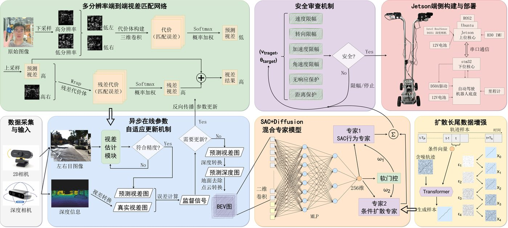
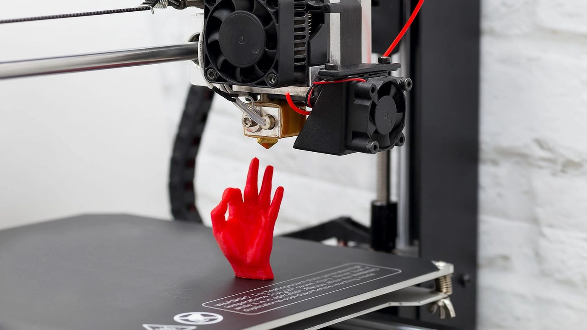
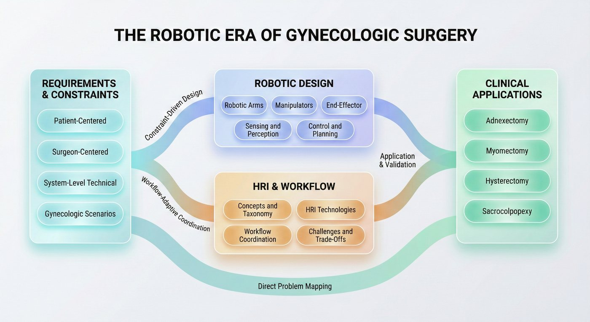

XiangyunHu (胡翔耘) - incoming PhD student at the Institute of Automation, Chinese Academy of Sciences
XiangyunHu胡翔耘
I am completing my undergraduate degree in Intelligent Sensing Engineering at Southeast University, and will join the Institute of Automation, Chinese Academy of Sciences as a PhD student in 2027.
My research interests lie in visual intelligence and multimodal learning. My work so far has spanned perception and decision-making for autonomous driving, physical simulation for additive manufacturing, and learning-based trajectory generation for rehabilitation.
01 / Research
I am interested in how visual and multimodal systems perceive complex environments and support reliable decisions. These are my current research interests and the directions I intend to pursue in doctoral work.
02 / Selected work
National Undergraduate Innovation Program · 2024.10 – 2026.04
Vision-based environmental perception and intelligent decision-making for autonomous driving
Led a full perception–decision–control pipeline for autonomous driving. Disparity matching was improved through multi-resolution processing and online parameter updates; long-tail scenario decisions were handled with a mixture-of-experts model and diffusion-based sample generation.
Completed with distinction (top 20%), with the largest individual contribution, and produced two granted invention patents (first and second inventor).

Pipeline overview: multi-resolution stereo matching with online parameter updates, safety arbitration, a mixture-of-experts decision model, and diffusion-based long-tail augmentation, deployed on a Jetson platform.
Jiangsu Key Laboratory of Robot Perception and Control Technology · 2024.10 – 2025.12
FDM 3D printing warping simulation
Developed a coupled thermal–mechanical model based on mass-spring dynamics and finite differences to simulate heat shrinkage and warping during printing. Delivered in collaboration with Shenzhen Creality 3D Technology, with a mean error of 0.04 mm on the simulation test set.
Sole contributor on the delivered project.

FDM printing, the process the thermal–mechanical model simulates.
National Key Laboratory of Digital Medical Engineering · 2025.07 – present
Upper-limb rehabilitation trajectory generation system
Building a system that generates personalized upper-limb rehabilitation trajectories, combining a Transformer-based imitation model with a diffusion generator to produce training paths matched to a patient's assessed ability. The algorithm framework and initial experiments are complete; data collection and refinement are in progress.
03 / Publications
First author · Submitted 2025
The Robotic Era of Gynecologic Surgery: A Comprehensive Review and the Next-Decade Outlook
Submitted to Intelligent Medicine (JCR Q1, IF 6.9). Proposes a clinical-need-to-engineering-design mapping framework that avoids the usual black-box treatment of robotic systems, and sets out a design and development roadmap for gynecologic surgical robotics.

The review's organizing framework, mapping clinical requirements through robotic design and human-robot interaction to clinical applications.
04 / Education
2023 – 2027 (expected)
Southeast University
BEng in Intelligent Sensing Engineering, School of Instrument Science and Engineering. GPA 3.81/4.8, ranked 5/57, recommended for postgraduate admission without examination.
From 2027
Institute of Automation, Chinese Academy of Sciences